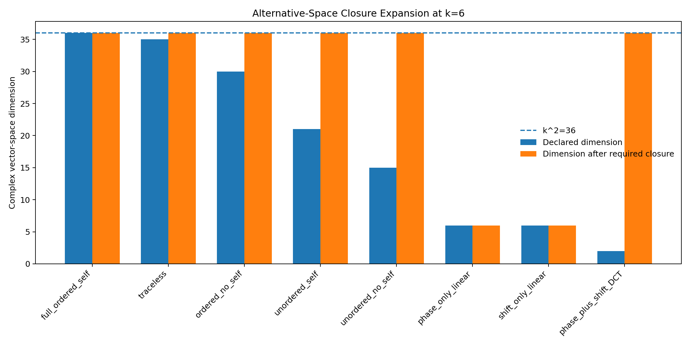
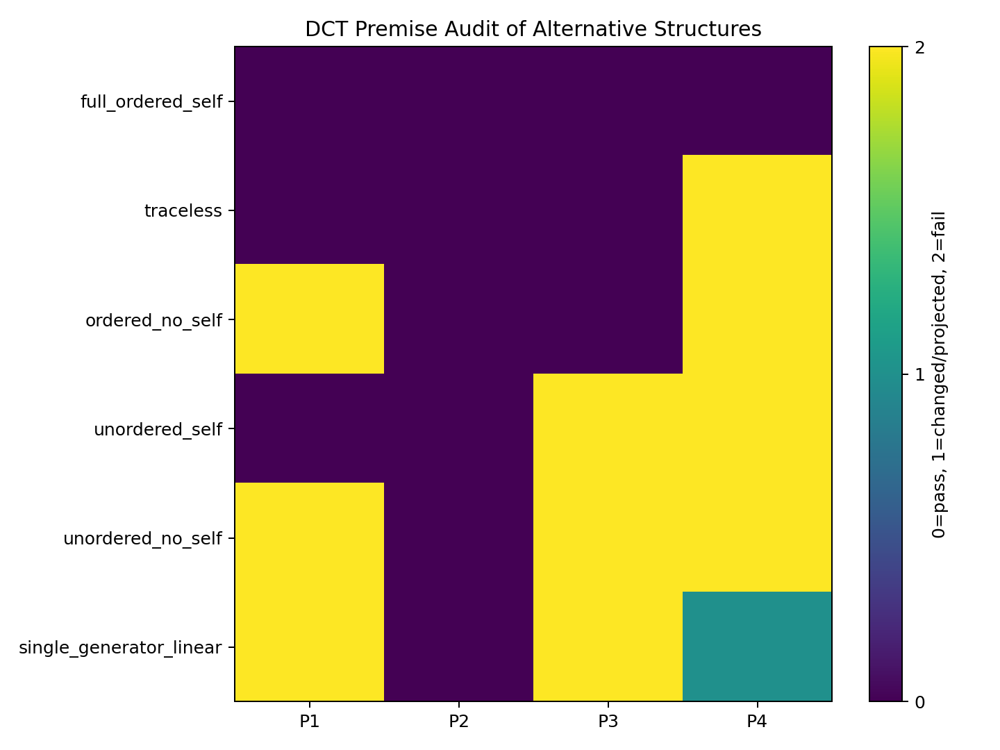
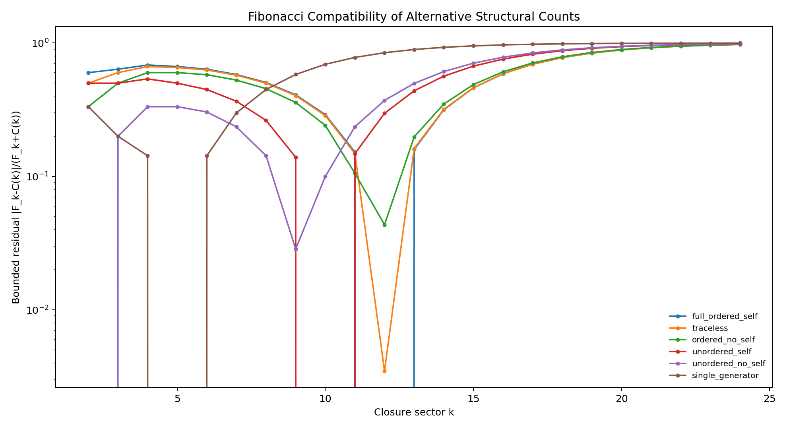

Entry 12
Alternative Structure Controls and Premise Audit
Entry 12 does not add a new EDF mechanism.
entry_12
Outputs folder: output
Figures
Click any figure to enlarge it.
{kind=link}

alternative_premise_audit.png
{kind=link}

alternative_structural_residuals.png
{kind=link}
Tables
Embedded previews of CSV/TSV outputs with links to the full raw files.
| k | candidate | declared_dimension | basis_rank | contains_identity | explicit_product_witness_in_declared_span | multiplicatively_closed_under_witness | unital_associative_closure_dimension | … |
|---|---|---|---|---|---|---|---|---|
| 2 | full_ordered_self | 4 | 4 | True | True | True | 4 | … |
| 2 | traceless | 3 | 3 | False | False | False | 4 | … |
| 2 | ordered_no_self | 2 | 2 | False | False | False | 4 | … |
| 2 | unordered_self | 3 | 3 | True | False | False | 4 | … |
| 2 | unordered_no_self | 1 | 1 | False | False | False | 2 | … |
| 2 | phase_only_linear | 2 | 2 | True | True | True | 2 | … |
Preview only — columns truncated, rows truncated. Open full file
| candidate | count_formula | exact_match_indices | match_count |
|---|---|---|---|
| full_ordered_self | k^2 | 12 | 1 |
| traceless | k^2-1 | none | 0 |
| ordered_no_self | k(k-1) | none | 0 |
| unordered_self | k(k+1)/2 | 10 | 1 |
| unordered_no_self | k(k-1)/2 | 2 | 1 |
| single_generator | k | 5 | 1 |
Preview only. Open full file
| control | space | closure_witness | consequence |
|---|---|---|---|
| Remove identity/tracial direction | k^2-1 | diag(1,-1,...)^2 has nonzero trace | Full unital closure regenerates missing direction. |
| Remove self-relations | k(k-1) | E_ij E_ji = E_ii | Self-relations are regenerated. |
| Forget direction | k(k+1)/2 | E_ii(E_ij+E_ji)=E_ij | Directed relation is regenerated. |
| Forget direction and self-relations | k(k-1)/2 | (E_ij+E_ji)^2=E_ii+E_jj | Diagonal/self structure is regenerated. |
| Keep only Z | k | No sector traversal | Fails P3. |
| Keep only X | k | No resolved phase operator | Fails P1. |
Preview only — rows truncated. Open full file
| candidate | count | P1 | P2 | P3 | P4 | required_change | Fibonacci_match |
|---|---|---|---|---|---|---|---|
| full_ordered_self | k^2 | PASS | PASS | PASS | PASS | None. | k=12 |
| traceless | k^2-1 | PASS | PASS | PASS | FAIL | Replace full unital operator closure by a traceless or normalized-state coordinate space. | none |
| ordered_no_self | k(k-1) | FAIL | PASS | PASS | FAIL | Delete self/identity relations despite their regeneration under composition. | none |
| unordered_self | k(k+1)/2 | PASS | PASS | FAIL | FAIL | Identify j->k with k->j and replace directed operator composition by unordered/symmetric relations. | k=10 |
| unordered_no_self | k(k-1)/2 | FAIL | PASS | FAIL | FAIL | Forget direction and remove self/identity relations. | k=2 |
| single_generator_linear | k | FAIL if shift-only | PASS | FAIL if phase-only | PASS as subalgebra | Discard either Z or X. Keeping both restores k^2. | k=5 |
Preview only. Open full file
| k | candidate | F_k | C_k | bounded_residual | exact_match |
|---|---|---|---|---|---|
| 2 | full_ordered_self | 1 | 4 | 0.6 | False |
| 2 | traceless | 1 | 3 | 0.5 | False |
| 2 | ordered_no_self | 1 | 2 | 0.3333333333333333 | False |
| 2 | unordered_self | 1 | 3 | 0.5 | False |
| 2 | unordered_no_self | 1 | 1 | 0.0 | True |
| 2 | single_generator | 1 | 2 | 0.3333333333333333 | False |
Preview only — rows truncated. Open full file
| k | candidate | declared_dimension | basis_rank | contains_identity | explicit_product_witness_in_declared_span | multiplicatively_closed_under_witness | unital_associative_closure_dimension | … |
|---|---|---|---|---|---|---|---|---|
| 6 | full_ordered_self | 36 | 36 | True | True | True | 36 | … |
| 6 | traceless | 35 | 35 | False | False | False | 36 | … |
| 6 | ordered_no_self | 30 | 30 | False | False | False | 36 | … |
| 6 | unordered_self | 21 | 21 | True | False | False | 36 | … |
| 6 | unordered_no_self | 15 | 15 | False | False | False | 36 | … |
| 6 | phase_only_linear | 6 | 6 | True | True | True | 6 | … |
Preview only — columns truncated, rows truncated. Open full file
Source files
Theoretical notes
Data files
No files in this category.
Other artifacts
No files in this category.